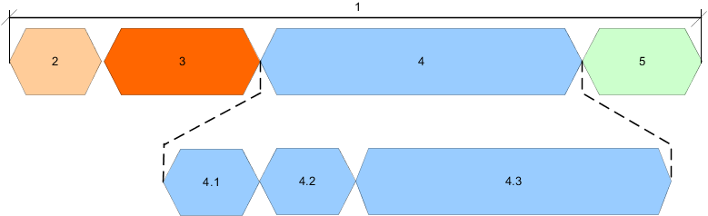
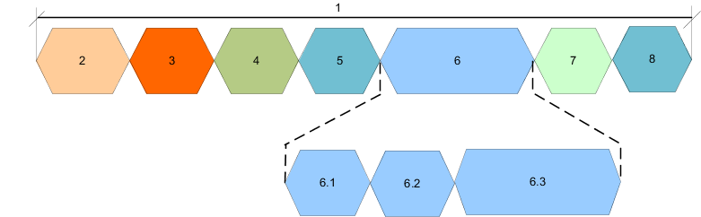

LE test packets are described in the "Air Interface Packets" section of the core specification for Bluetooth wireless technology, volume 6, part B.
Bluetooth TX measurements support both advertising channel packets and test packets.
- 8-bit or 16-bit preamble, followed by
- 32-bit sync word,
- The packet protocol data unit (PDU) containing the user data, and
- 24-bit CRC code.
LE uncoded packets take between 44 μs and 2120 μs to transmit.

Legend parameter | Size in byte | |
|---|---|---|
LE 1M PHY | LE 2M PHY | |
1. packet size | 10 to 265 (80 µs to 2120 µs) | 11 to 266 (44 µs to 2120 µs) |
2. preamble | 1 | 2 |
3. sync word | 4 | 4 |
4. PDU size | 2 to 257 | 2 to 257 |
4.1 PDU header | 1 | 1 |
4.2 PDU length | 1 | 1 |
4.2 PDU payload | 0 to 255 | 0 to 255 |
5. CRC | 3 | 3 |
The PDU is further subdivided into a PDU header and the payload field. The PDU header indicates the payload content type and the payload length expresses in octets.
The packet format for the LE coded PHY differs. Packets take between 462 μs and 17040 μs to transmit.
